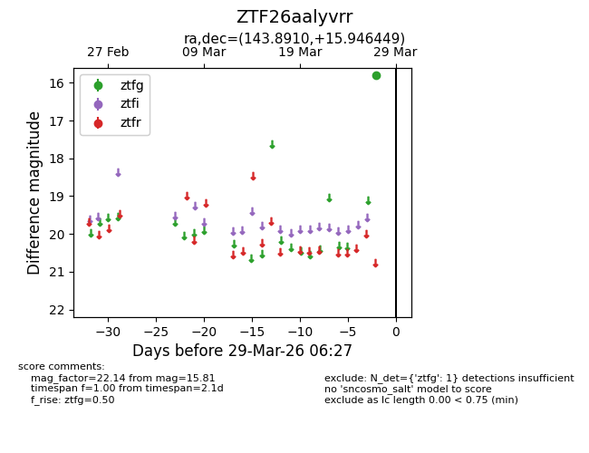
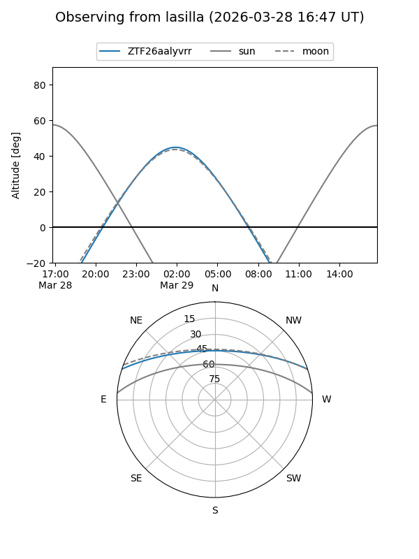
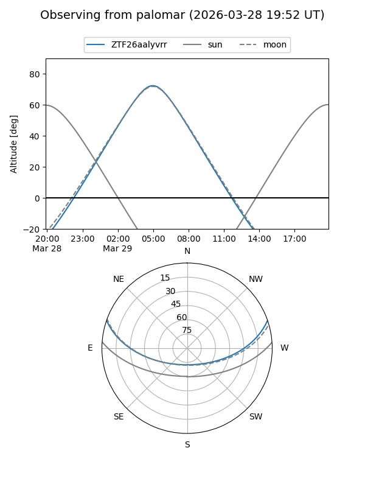

ZTF26aalyvrr
Target ZTF26aalyvrr at 2026-03-29 06:30
Aliases and brokers:
FINK: link
Lasair: link
ALeRCE: link
alt names
ZTF26aalyvrr (ztf,fink_ztf)
Coordinates:
equatorial (ra, dec) = 143.8910,+15.94645
equatorial (HMS+DMS) = 09:35:33.83,+15:56:47.22
galactic (l, b) = (216.3489,+43.39685)
Flags:
Photometry:
last ztfg=15.81
1 ztfg detections
Lightcurve

Visibility


Additional plots